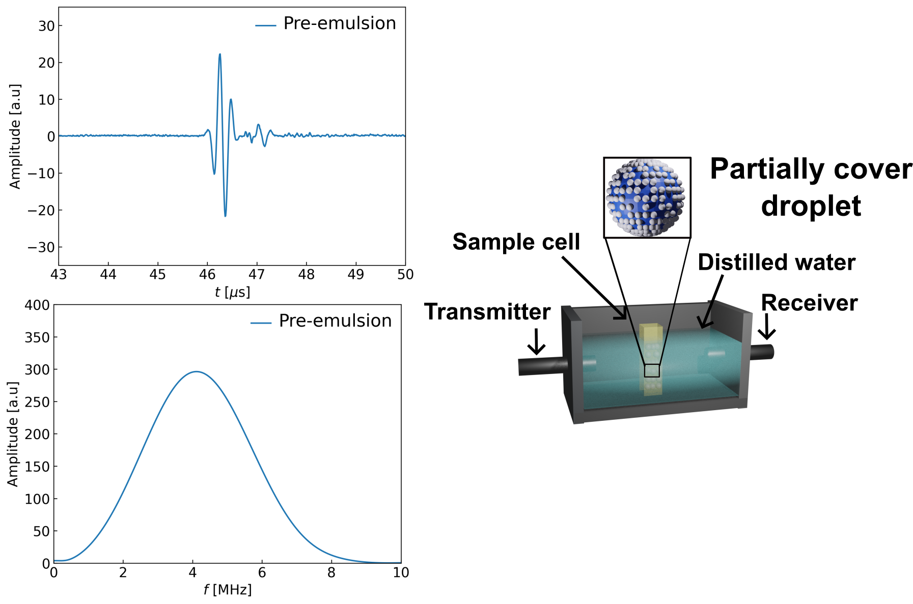

SIGNAL PROCESSING
Ultrasound attenuation spectroscopy
Extracting particle-size and concentration information from broadband attenuation measurements of magnetic fluids.
Project link →
Characterization AND SIGNAL PROCESSING
Ultrasound transducer characterization
Numerical scattering models for droplet-stabilised emulsions, validated against experimental spectra.
Project link →
SENSORS
Optical ultrasound sensor signal chain
Fabrication and signal-chain optimisation of high-frequency optical sensors for photoacoustic imaging.
Project link →
IMAGING
2D / 3D image reconstruction
Reconstruction pipelines turning raw acoustic data into interpretable ultrasound images.
Project link →